pacman::p_load(
tidyverse,
janitor,
scales,
ggthemes,
plotly,
DT,
broom,
DiagrammeR
)
theme_set(theme_minimal())Take-Home_Ex01
Visual Analytics for Data Discovery: Investigating Profitability, Claim Volatility, and High-Risk Segments
1. Introduction
1.1 Background
Motor insurance is one of the major business lines in the general insurance industry. For insurers, portfolio profitability depends not only on the amount of premium collected, but also on the frequency and severity of claims. Even when the overall portfolio appears profitable, certain policyholder, vehicle, or policy segments may still generate high losses and create volatility.
In practice, insurers need to identify which customer, vehicle, and policy characteristics are associated with higher claim costs and lower profitability. Visual analytics provides a useful approach because it combines data visualization, statistical summaries, and exploratory analysis to reveal patterns that may not be obvious from aggregate figures alone.
Therefore, this study applies visual analytics techniques to a motor insurance portfolio dataset to investigate profitability, claim volatility, and high-risk segments.
1.2 Objective and Analytically Questions
The objective of this take-home exercise is to use appropriate visual analytics methods, tidyverse functions, and ggplot2 extensions to explore the profitability and volatility of a motor insurance portfolio.
Specifically, this report aims to answer the following analytically questions:
- What are the distributions of premium income, claim cost, claim frequency, and loss ratio in the insurance portfolio?
- How does portfolio profitability change across years?
- Is weak profitability mainly driven by claim frequency, claim severity, or pricing inadequacy?
- Which policy characteristics, such as policy type, policy status, business type, and payment frequency, are associated with higher loss ratios?
- Which vehicle and driver characteristics, such as fuel type, driver age, vehicle age, and vehicle value, are associated with higher claim risk?
- Are the observed visual patterns statistically supported by validation methods?
Based on the analysis, this report provides practical insights that may support insurance pricing, underwriting, and portfolio management decisions.
2. Getting Started
2.1 Setting the Analytically Tools
The tidyverse family of packages is used for data importing, wrangling, transformation, and visualization. The janitor package is used to standardize column names and check data quality. The scales package is used to format percentage and currency values in charts. The plot package is used to create an interactive visualization as an extension of ggplot2. The broom package is used to present model outputs in a tidy format.
2.2 Data Source
The dataset used in this study is a real-world motor vehicle insurance portfolio dataset from a Spanish insurance company specialized in non-life insurance. The dataset contains policy-level information, including policy characteristics, driver characteristics, vehicle characteristics, premium income, claim counts, claim costs, and exposure.
The main variables used in this analysis include total premium, total incurred claims, total claims, total exposure, policy type, policy status, payment frequency, driver age, vehicle age, fuel type, vehicle value, and circulation area.
3.Data Wrangling
3.1 Importing Data
motor_raw <- read_delim(
"data/Dataset of motor insurance portfolio.csv",
delim = ";",
show_col_types = FALSE
)
glimpse(motor_raw)Rows: 354,140
Columns: 47
$ insured_id <dbl> 1, 2, 2, 2, 3, 3, 3, 4, 4, 4, 5, 5, 5, 6, …
$ year <dbl> 2022, 2022, 2023, 2024, 2022, 2023, 2024, …
$ policy_type <chr> "COMP_E", "COMP_E", "COMP_E", "COMP_E", "C…
$ policy_status <chr> "C", "A", "A", "A", "A", "A", "A", "A", "A…
$ business_type <chr> "NB", "P", "P", "P", "NB", "P", "P", "NB",…
$ payment_frequency <chr> "A", "A", "A", "A", "S", "S", "S", "A", "A…
$ bonus_score <chr> "G", "G", "G", "G", "G", "G", "G", "G", "G…
$ driver_age <dbl> 48, 43, 44, 45, 45, 46, 47, 32, 33, 34, 39…
$ vehicle_age <dbl> 22, 24, 25, 26, 26, 27, 28, 12, 13, 14, 20…
$ age_driving_licence <dbl> 26, 19, 19, 18, 19, 19, 19, 19, 19, 19, 19…
$ fuel_type <chr> "G", "D", "D", "D", "D", "D", "D", "D", "D…
$ vehicle_value <dbl> 149511.44, 65065.12, 65065.12, 65065.12, 5…
$ seats <dbl> 4, 8, 8, 8, 7, 7, 7, 5, 5, 5, 5, 5, 5, 5, …
$ power_to_weight_ratio <dbl> 3.92, 10.15, 10.15, 10.15, 9.19, 9.19, 9.1…
$ vehicle_brand <chr> "PORSCHE", "MERCEDES", "MERCEDES", "MERCED…
$ municipality_type <chr> "I", "I", "I", "I", "I", "I", "I", "I", "I…
$ circulation_area <chr> "U", "U", "U", "U", "R", "R", "R", "R", "R…
$ total_premium <dbl> 279.5576, 546.6234, 548.7526, 584.6324, 68…
$ liability_premium <dbl> 30.60232, 114.33336, 110.66689, 122.09253,…
$ property_damage_premium <dbl> 121.9127, 303.1060, 304.9560, 305.2251, 35…
$ theft_premium <dbl> 112.361489, 80.784824, 83.521384, 107.8868…
$ fire_premium <dbl> 3.832441, 7.826861, 6.151465, 5.842892, 7.…
$ glass_premium <dbl> 8.305788, 30.091751, 32.861626, 31.101584,…
$ legal_protection_premium <dbl> 2.043622, 7.812747, 7.655637, 10.084173, 6…
$ occupants_premium <dbl> 0.4992053, 2.6679084, 2.9395659, 2.3992827…
$ total_claims <dbl> 0, 0, 1, 2, 0, 0, 0, 0, 0, 0, 0, 0, 0, 5, …
$ liability_claims <dbl> 0, 0, 1, 1, 0, 0, 0, 0, 0, 0, 0, 0, 0, 0, …
$ liability_property_claims <dbl> 0, 0, 1, 1, 0, 0, 0, 0, 0, 0, 0, 0, 0, 0, …
$ liability_injury_claims <dbl> 0, 0, 0, 0, 0, 0, 0, 0, 0, 0, 0, 0, 0, 0, …
$ property_claims <dbl> 0, 0, 0, 1, 0, 0, 0, 0, 0, 0, 0, 0, 0, 5, …
$ theft_claims <dbl> 0, 0, 0, 0, 0, 0, 0, 0, 0, 0, 0, 0, 0, 0, …
$ fire_claims <dbl> 0, 0, 0, 0, 0, 0, 0, 0, 0, 0, 0, 0, 0, 0, …
$ glass_claims <dbl> 0, 0, 0, 0, 0, 0, 0, 0, 0, 0, 0, 0, 0, 0, …
$ legal_protection_claims <dbl> 0, 0, 0, 0, 0, 0, 0, 0, 0, 0, 0, 0, 0, 0, …
$ occupants_claims <dbl> 0, 0, 0, 0, 0, 0, 0, 0, 0, 0, 0, 0, 0, 0, …
$ total_incurred <dbl> 0.000, 0.000, 233.013, 2586.361, 0.000, 0.…
$ liability_incurred <dbl> 0.000, 0.000, 233.013, 1035.000, 0.000, 0.…
$ liability_property_incurred <dbl> 0.000, 0.000, 233.013, 1035.000, 0.000, 0.…
$ liability_injury_incurred <dbl> 0.000, 0.000, 0.000, 0.000, 0.000, 0.000, …
$ property_incurred <dbl> 0.000, 0.000, 0.000, 1551.361, 0.000, 0.00…
$ theft_incurred <dbl> 0, 0, 0, 0, 0, 0, 0, 0, 0, 0, 0, 0, 0, 0, …
$ fire_incurred <dbl> 0, 0, 0, 0, 0, 0, 0, 0, 0, 0, 0, 0, 0, 0, …
$ glass_incurred <dbl> 0, 0, 0, 0, 0, 0, 0, 0, 0, 0, 0, 0, 0, 0, …
$ legal_protection_incurred <dbl> 0, 0, 0, 0, 0, 0, 0, 0, 0, 0, 0, 0, 0, 0, …
$ occupants_incurred <dbl> 0, 0, 0, 0, 0, 0, 0, 0, 0, 0, 0, 0, 0, 0, …
$ total_exposure <dbl> 0.09863014, 1.00000000, 1.00000000, 1.0000…
$ liability_exposure <dbl> 0.09863014, 1.00000000, 1.00000000, 1.0000…The dataset is imported into the R environment using the read_delim() function because the CSV file uses semicolons as separators. The glimpse() function is used to check the structure, variable types, and sample values of the imported dataset.
3.2 Checking Dataset Structure
dim(motor_raw)[1] 354140 47names(motor_raw) [1] "insured_id" "year"
[3] "policy_type" "policy_status"
[5] "business_type" "payment_frequency"
[7] "bonus_score" "driver_age"
[9] "vehicle_age" "age_driving_licence"
[11] "fuel_type" "vehicle_value"
[13] "seats" "power_to_weight_ratio"
[15] "vehicle_brand" "municipality_type"
[17] "circulation_area" "total_premium"
[19] "liability_premium" "property_damage_premium"
[21] "theft_premium" "fire_premium"
[23] "glass_premium" "legal_protection_premium"
[25] "occupants_premium" "total_claims"
[27] "liability_claims" "liability_property_claims"
[29] "liability_injury_claims" "property_claims"
[31] "theft_claims" "fire_claims"
[33] "glass_claims" "legal_protection_claims"
[35] "occupants_claims" "total_incurred"
[37] "liability_incurred" "liability_property_incurred"
[39] "liability_injury_incurred" "property_incurred"
[41] "theft_incurred" "fire_incurred"
[43] "glass_incurred" "legal_protection_incurred"
[45] "occupants_incurred" "total_exposure"
[47] "liability_exposure" motor_raw %>%
summarise(
rows = n(),
columns = ncol(motor_raw),
unique_insured = n_distinct(insured_id),
first_year = min(year, na.rm = TRUE),
last_year = max(year, na.rm = TRUE)
)# A tibble: 1 × 5
rows columns unique_insured first_year last_year
<int> <int> <int> <dbl> <dbl>
1 354140 47 185678 2022 2024The dataset contains policy-level observations across the years 2022, 2023, and 2024. Each observation represents an insurance policy record with information on policy characteristics, vehicle characteristics, driver characteristics, premium income, claim counts, incurred claim costs, and exposure.
3.3 Cleaning Column Names
motor <- motor_raw %>%
clean_names()
names(motor) [1] "insured_id" "year"
[3] "policy_type" "policy_status"
[5] "business_type" "payment_frequency"
[7] "bonus_score" "driver_age"
[9] "vehicle_age" "age_driving_licence"
[11] "fuel_type" "vehicle_value"
[13] "seats" "power_to_weight_ratio"
[15] "vehicle_brand" "municipality_type"
[17] "circulation_area" "total_premium"
[19] "liability_premium" "property_damage_premium"
[21] "theft_premium" "fire_premium"
[23] "glass_premium" "legal_protection_premium"
[25] "occupants_premium" "total_claims"
[27] "liability_claims" "liability_property_claims"
[29] "liability_injury_claims" "property_claims"
[31] "theft_claims" "fire_claims"
[33] "glass_claims" "legal_protection_claims"
[35] "occupants_claims" "total_incurred"
[37] "liability_incurred" "liability_property_incurred"
[39] "liability_injury_incurred" "property_incurred"
[41] "theft_incurred" "fire_incurred"
[43] "glass_incurred" "legal_protection_incurred"
[45] "occupants_incurred" "total_exposure"
[47] "liability_exposure" The clean_names() function from the janitor package is applied to standardise the variable names. This step makes the column names easier to reference in later data wrangling and visualisation steps.
3.4 Checking Duplicates and Missing Values
sum(duplicated(motor))[1] 0missing_summary <- motor %>%
summarise(across(everything(), ~ sum(is.na(.)))) %>%
pivot_longer(
cols = everything(),
names_to = "variable",
values_to = "missing_count"
) %>%
filter(missing_count > 0) %>%
arrange(desc(missing_count))
missing_summary# A tibble: 4 × 2
variable missing_count
<chr> <int>
1 fuel_type 1287
2 vehicle_value 513
3 vehicle_age 2
4 age_driving_licence 2A duplicate check is conducted to ensure that the dataset does not contain repeated records. Missing values are also examined for all variables. The main variables with missing values are fuel_type, vehicle_value, vehicle_age, and age_driving_licence. Since the number of missing values is small relative to the total dataset size, these observations are removed from the analytical dataset.
Handing Missing Value:
motor_clean <- motor %>%
drop_na(
fuel_type,
vehicle_value,
vehicle_age,
age_driving_licence
)
dim(motor_clean)[1] 352338 473.5 Creating Analytically Insurance Metrics
motor_clean <- motor_clean %>%
mutate(
claim_indicator = if_else(total_claims > 0, 1, 0),
profit = total_premium - total_incurred,
loss_ratio = if_else(total_premium > 0, total_incurred / total_premium, NA_real_),
claim_frequency = if_else(total_exposure > 0, total_claims / total_exposure, NA_real_),
claim_severity = if_else(total_claims > 0, total_incurred / total_claims, NA_real_)
)Several analytically variables are created to support the insurance portfolio analysis. Profit is calculated as total premium minus total incurred claims. Loss ratio is calculated as total incurred claims divided by total premium and is used as the main profitability measure. A higher loss ratio indicates weaker profitability.
Claim frequency is calculated as total claims divided by total exposure, while claim severity is calculated as total incurred claims divided by total claims. These two variables help distinguish whether poor portfolio performance is driven by frequent claims or by large claim amounts.
3.6 Grouping Driver Age, Vehicle Age, and Vehicle Value
motor_clean <- motor_clean %>%
mutate(
driver_age_group = cut(
driver_age,
breaks = c(17, 25, 35, 45, 55, 65, Inf),
labels = c("18-25", "26-35", "36-45", "46-55", "56-65", "66+"),
right = TRUE
),
vehicle_age_group = cut(
vehicle_age,
breaks = c(-1, 5, 10, 20, 30, Inf),
labels = c("0-5", "6-10", "11-20", "21-30", "31+"),
right = TRUE
),
vehicle_value_group = cut(
vehicle_value,
breaks = quantile(vehicle_value, probs = seq(0, 1, 0.2), na.rm = TRUE),
include.lowest = TRUE,
labels = c("Very Low", "Low", "Medium", "High", "Very High")
)
)Driver age, vehicle age, and vehicle value are grouped into categorical variables. This makes the visual analysis easier to interpret and allows the report to identify segment-level risk patterns more clearly.
After the data wrangling process, the analytical dataset is ready for visual analysis. The cleaning process includes standardising column names, checking duplicates, examining missing values, removing observations with missing values in key variables, and creating insurance-specific analytical metrics.
The most important derived variables are profit, loss ratio, claim frequency, and claim severity. These variables are necessary because the original dataset only provides raw premium and claim information. By transforming the raw variables into insurance performance indicators, the analysis can evaluate not only whether the portfolio is profitable, but also why some segments are less profitable than others.
Loss ratio is used as the main profitability measure. Claim frequency and claim severity are used to decompose claim risk into two components: how often claims occur and how expensive each claim is. This distinction is important because two segments may have similar loss ratios but very different risk structures.
3.7 Analytical Workflow Map
The analytical workflow map summarises how the raw motor insurance portfolio dataset is transformed into a visual analytics report. The process begins with data wrangling, including column name cleaning, duplicate checking, missing value checking, and removal of missing observations in key variables.
After cleaning the data, several insurance-specific metrics are created, including profit, loss ratio, claim frequency, and claim severity. These variables are central to the analysis because they allow the report to evaluate not only whether the portfolio is profitable, but also whether weak performance is driven by frequent claims or expensive claims.
The workflow then moves from portfolio-level analysis to segment-level analysis and advanced visual analytics. This structure supports a clear analytical logic: first identifying the overall profitability trend, then locating high-risk segments, and finally translating the findings into pricing, underwriting, and tail-risk monitoring implications.
4. Portfolio-Level Visual Analytics
This section uses portfolio-level visual analytics to examine the overall profitability trend of the insurance portfolio. The analysis begins with yearly aggregation because the raw dataset is policy-level, while profitability deterioration is easier to observe at the portfolio-year level.
The group_by() and summarise() functions in the dplyr package are used to aggregate total premium, total incurred claims, total claims, and exposure by year. The ggplot() function in the ggplot2 package is then used to create bar charts comparing yearly loss ratios and yearly premium-claim movements. The scales package is used to format loss ratios as percentages and monetary values as currency.
Observations
The dataset is suitable for motor insurance portfolio analysis because it contains premium income, incurred claims, claim counts, exposure, policy characteristics, driver information, and vehicle information.
Several insurance-specific analytical variables are created, including
profit,loss_ratio,claim_frequency, andclaim_severity. These variables transform the raw data into a more meaningful analytical sandbox for profitability and risk analysis.Driver age, vehicle age, and vehicle value are grouped into categorical segments to support clearer visual comparison across risk groups.
4.1 Overall Portfolio Profitability
portfolio_summary <- motor_clean %>%
summarise(
number_of_records = n(),
unique_insured = n_distinct(insured_id),
total_premium = sum(total_premium, na.rm = TRUE),
total_incurred = sum(total_incurred, na.rm = TRUE),
total_claims = sum(total_claims, na.rm = TRUE),
total_exposure = sum(total_exposure, na.rm = TRUE),
overall_profit = total_premium - total_incurred,
overall_loss_ratio = total_incurred / total_premium,
overall_claim_frequency = total_claims / total_exposure,
overall_claim_severity = total_incurred / total_claims
)
portfolio_summary# A tibble: 1 × 10
number_of_records unique_insured total_premium total_incurred total_claims
<int> <int> <dbl> <dbl> <dbl>
1 352338 184724 104379210. 73410702. 76542
# ℹ 5 more variables: total_exposure <dbl>, overall_profit <dbl>,
# overall_loss_ratio <dbl>, overall_claim_frequency <dbl>,
# overall_claim_severity <dbl>The portfolio-level summary provides the baseline for the whole analysis. At the aggregate level, the portfolio appears profitable because total premium income is higher than total incurred claims. However, this aggregate result should not be interpreted as evidence that every segment is performing well.
In insurance portfolio analysis, the overall loss ratio can hide large differences across product types, customer groups, vehicle characteristics, and policy behaviours. A portfolio can be profitable overall while still containing loss-making subgroups. Therefore, the following sections move from portfolio-level analysis to segment-level analysis to identify where profitability problems and claim volatility are concentrated.
4.2 Yearly Trend in Loss Ratio
year_summary <- motor_clean %>%
group_by(year) %>%
summarise(
premium = sum(total_premium, na.rm = TRUE),
incurred = sum(total_incurred, na.rm = TRUE),
claims = sum(total_claims, na.rm = TRUE),
exposure = sum(total_exposure, na.rm = TRUE),
profit = premium - incurred,
loss_ratio = incurred / premium,
claim_frequency = claims / exposure,
claim_severity = incurred / claims,
.groups = "drop"
)
year_summary# A tibble: 3 × 9
year premium incurred claims exposure profit loss_ratio claim_frequency
<dbl> <dbl> <dbl> <dbl> <dbl> <dbl> <dbl> <dbl>
1 2022 18596245. 12219605. 12613 41741. 6376639. 0.657 0.302
2 2023 35125315. 23371029. 24992 82014. 11754285. 0.665 0.305
3 2024 50657651. 37820067. 38937 125317. 12837584. 0.747 0.311
# ℹ 1 more variable: claim_severity <dbl>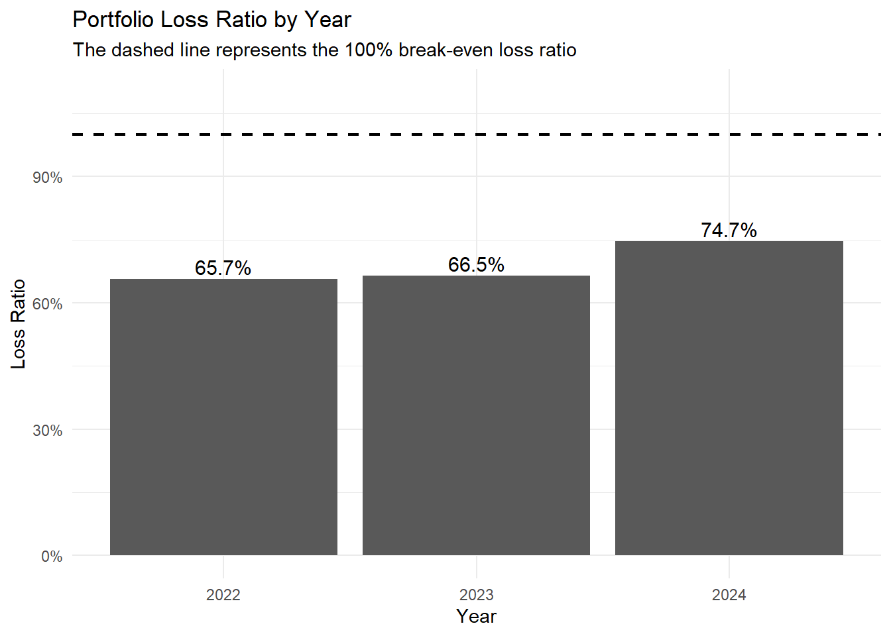
ggplot(year_summary, aes(x = factor(year), y = loss_ratio)) +
geom_col() +
geom_hline(
yintercept = 1,
linetype = "dashed",
linewidth = 0.8
) +
geom_text(
aes(label = percent(loss_ratio, accuracy = 0.1)),
vjust = -0.3,
size = 4
) +
scale_y_continuous(
labels = percent,
limits = c(0, 1.1)
) +
labs(
title = "Portfolio Loss Ratio by Year",
subtitle = "The dashed line represents the 100% break-even loss ratio",
x = "Year",
y = "Loss Ratio"
) +
theme_minimal()The yearly loss ratio shows a clear upward trend from 2022 to 2024. The loss ratio increased from 65.7% in 2022 to 66.5% in 2023, and then rose more noticeably to 74.7% in 2024. Since loss ratio measures incurred claims as a proportion of premium income, this increase suggests that claim costs are growing faster than premium income.
Although the portfolio remains profitable overall because the loss ratio is still below 100%, the upward trend indicates weaker profitability over time. This is an important warning signal for the insurer because it may reflect higher claim frequency, higher claim severity, claim inflation, or insufficient premium adjustment.
Therefore, the later sections examine claim frequency, claim severity, and segment-level loss ratios to identify which factors may be driving the deterioration in portfolio profitability.
4.3 Premium Growth versus Claim Cost Growth

year_long <- year_summary %>%
select(year, premium, incurred) %>%
pivot_longer(
cols = c(premium, incurred),
names_to = "metric",
values_to = "amount"
) %>%
mutate(
metric = recode(
metric,
"premium" = "Premium Income",
"incurred" = "Incurred Claims"
)
)
ggplot(year_long, aes(x = factor(year), y = amount, fill = metric)) +
geom_col(position = "dodge") +
scale_y_continuous(labels = dollar) +
labs(
title = "Premium Income and Incurred Claims by Year",
subtitle = "Both premium and claims increased, but claim costs grew faster in 2024",
x = "Year",
y = "Amount",
fill = "Metric"
) +
theme_minimal()This chart compares premium income and incurred claims across the three policy years. Both premium income and incurred claims increased from 2022 to 2024, indicating that the portfolio became larger over time. However, incurred claims increased more rapidly relative to premium income, especially in 2024.
In 2022 and 2023, the gap between premium income and incurred claims remained relatively wide. In 2024, although premium income reached its highest level, incurred claims also increased substantially. This explains why the loss ratio rose to 74.7% in 2024.
From a portfolio management perspective, this pattern suggests that business growth alone does not guarantee stronger profitability. If claim costs grow faster than premium income, the insurer’s underwriting margin becomes thinner. Therefore, it is important to investigate whether the increase in incurred claims is driven by higher claim frequency, higher claim severity, or specific high-risk segments.
Business growth does not necessarily improve profitability if claim costs grow faster than premium income.
year_growth <- year_summary %>%
arrange(year) %>%
mutate(
premium_growth = premium / lag(premium) - 1,
incurred_growth = incurred / lag(incurred) - 1
) %>%
select(year, premium_growth, incurred_growth)
year_growth# A tibble: 3 × 3
year premium_growth incurred_growth
<dbl> <dbl> <dbl>
1 2022 NA NA
2 2023 0.889 0.913
3 2024 0.442 0.618The growth-rate comparison further confirms that incurred claims increased faster than premium income in 2024, which explains the deterioration in the yearly loss ratio.
Portfolio-Level Insights
The portfolio remains profitable overall, but profitability weakened over time.
The yearly loss ratio increased from 65.7% in 2022 to 66.5% in 2023, and then to 74.7% in 2024.
Both premium income and incurred claims increased from 2022 to 2024, but incurred claims grew faster relative to premium income in 2024.
Business growth does not necessarily improve profitability if claim costs grow faster than premium income.
5. Claim Distribution and Volatility
This section examines the distribution of claim costs and loss ratios to understand portfolio volatility. Insurance claim data are usually highly skewed because most policies have no or small claims, while a small number of policies generate very large losses. Therefore, distributional visualisation is important before conducting segment-level analysis.
The filter() function is used to focus on policies with positive incurred claims where appropriate. The geom_histogram() function is used to visualise claim cost and loss ratio distributions. For total incurred claims, scale_x_log10() is applied because the original claim amount distribution is highly right-skewed. A claim concentration curve is also created to assess whether a small share of high-loss policies accounts for a large share of total incurred claims.
5.1 Distribution of Total Incurred Claims
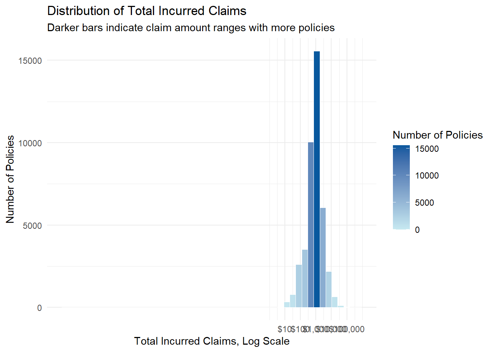
ggplot(
motor_clean %>% filter(total_incurred > 0),
aes(x = total_incurred)
) +
geom_histogram(
aes(fill = after_stat(count)),
bins = 50,
color = "white",
linewidth = 0.2
) +
scale_fill_gradient(
low = "#C7E9F1",
high = "#08589E",
name = "Number of Policies"
) +
scale_x_log10(
breaks = c(10, 100, 1000, 10000, 100000),
labels = dollar_format(accuracy = 1)
) +
labs(
title = "Distribution of Total Incurred Claims",
subtitle = "Darker bars indicate claim amount ranges with more policies",
x = "Total Incurred Claims, Log Scale",
y = "Number of Policies"
) +
theme_minimal()The distribution of total incurred claims is shown on a log scale because claim costs are highly right-skewed in the original scale. Most policies with claims are concentrated in the lower-to-middle claim amount range, while only a small number of policies generate very large incurred claims.
This pattern is typical in insurance portfolios. Many policies either have no claim or relatively small claims, but a few large-loss policies can have a substantial effect on total incurred claims. Therefore, the mean claim amount alone may not fully represent the risk profile of the portfolio.
The log-scaled histogram makes the distribution easier to inspect by compressing extreme claim values. It shows that claim costs are not evenly distributed across policies, which motivates the following claim concentration analysis. In particular, the next section examines whether a small proportion of high-loss policies accounts for a large share of total incurred claims.
5.2 Distribution of Loss Ratio
5.2.1 Claim Occurrence Overview
claim_occurrence_summary <- motor_clean %>%
mutate(
claim_status = if_else(total_claims > 0, "With Claims", "No Claims")
) %>%
count(claim_status) %>%
mutate(share = n / sum(n))
claim_occurrence_summary# A tibble: 2 × 3
claim_status n share
<chr> <int> <dbl>
1 No Claims 301862 0.857
2 With Claims 50476 0.143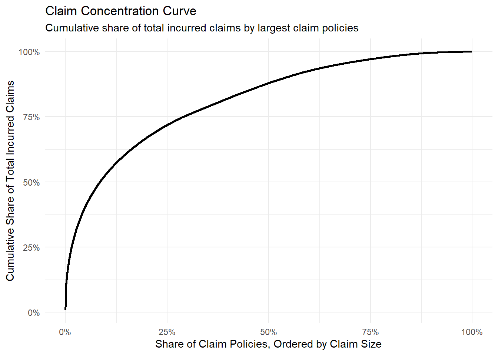
ggplot(claim_occurrence_summary,
aes(x = claim_status, y = share, fill = claim_status)) +
geom_col(width = 0.6) +
geom_text(
aes(label = percent(share, accuracy = 0.1)),
vjust = -0.3,
size = 4
) +
scale_y_continuous(labels = percent, limits = c(0, 1)) +
scale_fill_manual(values = c("No Claims" = "#A6CEE3", "With Claims" = "#1F78B4")) +
labs(
title = "Share of Policies With and Without Claims",
subtitle = "Many policies have zero incurred claims, which explains the concentration at zero loss ratio",
x = NULL,
y = "Share of Policies"
) +
theme_minimal() +
theme(legend.position = "none")Before examining the distribution of loss ratio, it is important to first separate policies with claims from policies without claims. In motor insurance portfolios, many policies do not generate any claims during the observation period. These policies have zero incurred claims and therefore a loss ratio of zero.
The claim occurrence chart shows the share of policies with and without claims. This step is necessary because a large number of zero-claim policies can dominate the original loss ratio distribution. If all policies are plotted together, the chart becomes heavily concentrated at zero and the variation among claim-generating policies becomes difficult to observe.
From an insurance perspective, this distinction is important. Policies without claims contribute positively to profitability, while policies with claims determine the main source of claim cost and portfolio volatility. Therefore, separating claim occurrence from positive loss ratio analysis provides a clearer view of the portfolio’s risk structure.
5.2.2 Distribution of Positive Loss Ratio
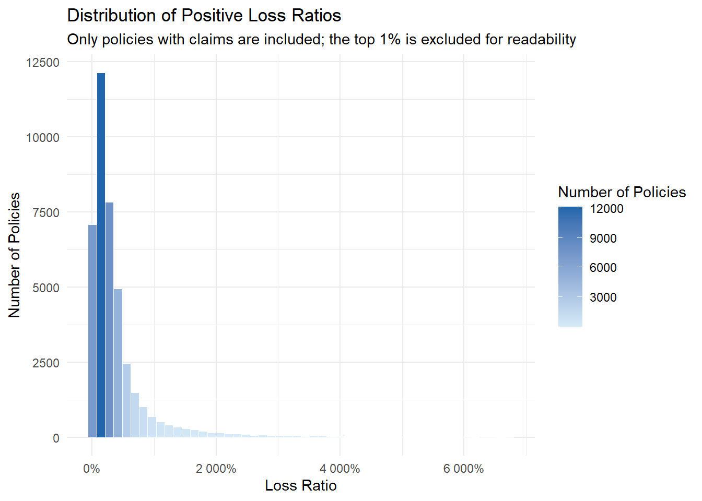
positive_loss_ratio_cap <- motor_clean %>%
filter(loss_ratio > 0) %>%
summarise(cap = quantile(loss_ratio, 0.99, na.rm = TRUE)) %>%
pull(cap)
ggplot(
motor_clean %>%
filter(loss_ratio > 0, loss_ratio <= positive_loss_ratio_cap),
aes(x = loss_ratio)
) +
geom_histogram(
aes(fill = after_stat(count)),
bins = 50,
color = "white",
linewidth = 0.2
) +
scale_fill_gradient(
low = "#D6EAF8",
high = "#2166AC",
name = "Number of Policies"
) +
scale_x_continuous(labels = percent) +
labs(
title = "Distribution of Positive Loss Ratios",
subtitle = "Only policies with claims are included; the top 1% is excluded for readability",
x = "Loss Ratio",
y = "Number of Policies"
) +
theme_minimal()After separating claim occurrence, the analysis focuses only on policies with positive loss ratios. Zero-loss policies are excluded from this chart so that the distribution among claim-generating policies can be inspected more clearly. The top 1% of positive loss ratios are also excluded for readability because extreme values can stretch the x-axis and make the main distribution difficult to interpret.
The distribution of positive loss ratios remains right-skewed. This means that even among policies with claims, most policies have moderate loss ratios, while a smaller group has very high loss ratios. These high loss-ratio policies are important because their claim costs are large relative to the premium income collected.
This finding suggests that profitability risk is not evenly distributed across claim-generating policies. Some policies remain manageable from a loss ratio perspective, while others create much weaker profitability. This motivates the later segment-level analysis, where policy type, policy status, fuel type, payment frequency, driver age, and vehicle age are examined to identify whether high loss-ratio policies are concentrated in specific groups.
Overall, this two-step analysis provides a clearer interpretation than plotting the original loss ratio distribution alone. The first chart explains why the original distribution is concentrated at zero, while the second chart reveals the shape of the loss ratio distribution among policies that actually generate claims.
This approach is useful for insurance visual analytics because it separates claim occurrence risk from claim profitability risk. Claim occurrence shows whether a policy generates a claim, while positive loss ratio shows how severe the financial impact is once a claim occurs. This distinction supports the later frequency-severity and segment-level analysis.
5.3 Claim Concentration and Tail Risk
claim_concentration <- motor_clean %>%
filter(total_incurred > 0) %>%
arrange(desc(total_incurred)) %>%
mutate(
claim_rank = row_number(),
claim_percentile = claim_rank / n(),
cumulative_incurred = cumsum(total_incurred),
cumulative_share = cumulative_incurred / sum(total_incurred)
)
claim_concentration_summary <- claim_concentration %>%
summarise(
top_1_percent_share = sum(total_incurred[claim_percentile <= 0.01]) / sum(total_incurred),
top_5_percent_share = sum(total_incurred[claim_percentile <= 0.05]) / sum(total_incurred),
top_10_percent_share = sum(total_incurred[claim_percentile <= 0.10]) / sum(total_incurred)
)
claim_concentration_summary# A tibble: 1 × 3
top_1_percent_share top_5_percent_share top_10_percent_share
<dbl> <dbl> <dbl>
1 0.210 0.409 0.530The concentration summary further quantifies the tail-risk pattern. The largest 1%, 5%, and 10% of claim policies explain a disproportionate share of total incurred claims. This confirms that a small number of large-loss policies has a large effect on portfolio-level claim costs.
For example, the largest 1% of claim policies account for approximately 21% of total incurred claims, while the largest 10% account for approximately 53%. This confirms that claim costs are highly concentrated among a small group of high-loss policies.
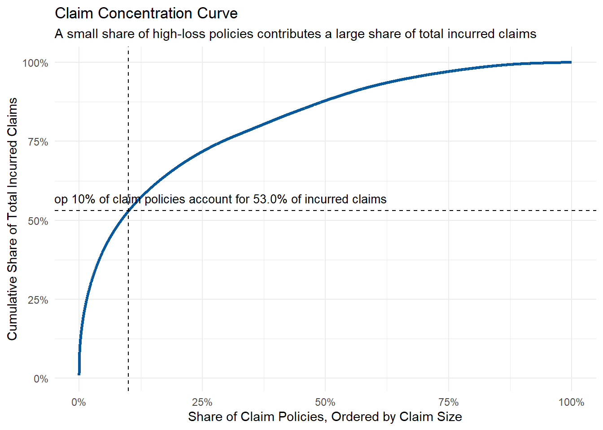
top10_share <- claim_concentration %>%
filter(claim_percentile <= 0.10) %>%
summarise(share = max(cumulative_share)) %>%
pull(share)
ggplot(claim_concentration,
aes(x = claim_percentile, y = cumulative_share)) +
geom_line(color = "#08589E", linewidth = 1.1) +
geom_vline(xintercept = 0.10, linetype = "dashed") +
geom_hline(yintercept = top10_share, linetype = "dashed") +
annotate(
"text",
x = 0.28,
y = top10_share + 0.04,
label = paste0("Top 10% of claim policies account for ",
percent(top10_share, accuracy = 0.1),
" of incurred claims"),
size = 3.5
) +
scale_x_continuous(labels = percent) +
scale_y_continuous(labels = percent) +
labs(
title = "Claim Concentration Curve",
subtitle = "A small share of high-loss policies contributes a large share of total incurred claims",
x = "Share of Claim Policies, Ordered by Claim Size",
y = "Cumulative Share of Total Incurred Claims"
) +
theme_minimal()The claim concentration curve shows the cumulative share of total incurred claims contributed by claim policies ordered from the largest claim amount to the smallest. The curve rises steeply at the beginning, which means that a relatively small proportion of high-loss policies accounts for a large share of total incurred claims.
This result provides clear evidence of claim concentration. In other words, portfolio volatility is not only driven by the average claim amount, but also by a small number of large-loss policies. These high-loss policies can have a material impact on total incurred claims and may weaken portfolio profitability even when most policies generate small or moderate claims.
From an insurance portfolio management perspective, this finding is important because it highlights the need for tail-risk monitoring. The insurer should not only monitor average claim frequency and severity, but also examine the characteristics of large-loss policies. For example, further analysis could investigate whether high-loss claims are concentrated in specific policy types, vehicle age groups, fuel types, regions, or payment frequency groups.
5.4 Frequency-Severity Decomposition by Year
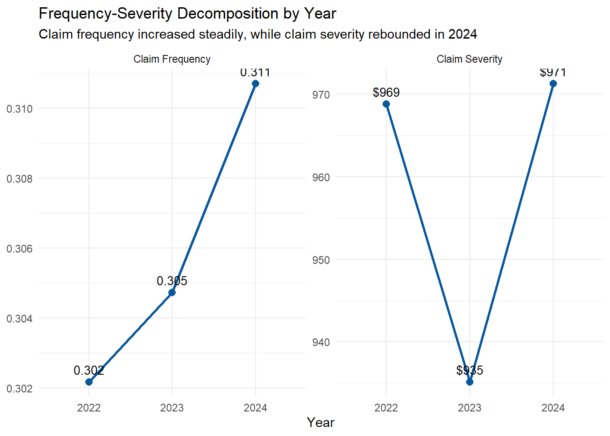
year_fs <- year_summary %>%
select(year, claim_frequency, claim_severity) %>%
pivot_longer(
cols = c(claim_frequency, claim_severity),
names_to = "metric",
values_to = "value"
) %>%
mutate(
metric = recode(
metric,
"claim_frequency" = "Claim Frequency",
"claim_severity" = "Claim Severity"
),
label = case_when(
metric == "Claim Frequency" ~ round(value, 3) %>% as.character(),
metric == "Claim Severity" ~ dollar(value, accuracy = 1)
)
)
ggplot(year_fs, aes(x = factor(year), y = value, group = metric)) +
geom_line(linewidth = 1, color = "#08589E") +
geom_point(size = 2.5, color = "#08589E") +
geom_text(
aes(label = label),
vjust = -0.8,
size = 3.5
) +
facet_wrap(~ metric, scales = "free_y") +
labs(
title = "Frequency-Severity Decomposition by Year",
subtitle = "Claim frequency increased steadily, while claim severity rebounded in 2024",
x = "Year",
y = NULL
) +
theme_minimal()Frequency-severity decomposition is used to understand why the portfolio loss ratio changed over time. Claim frequency measures how often claims occur per unit of exposure, while claim severity measures the average incurred claim cost per claim. This decomposition is important because the same loss ratio increase can be caused by more frequent claims, more expensive claims, or both.
The result shows that claim frequency increased steadily from 2022 to 2024. This suggests that claims became more frequent over time. Claim severity shows a different pattern: it decreased in 2023 but increased again in 2024. Therefore, the deterioration in 2024 profitability appears to be driven by both higher claim frequency and a rebound in claim severity.
This finding helps explain the earlier yearly loss ratio result. The portfolio loss ratio increased to 74.7% in 2024 because claim costs became heavier relative to premium income. From an insurance management perspective, this means that the insurer should monitor both claim occurrence and average claim size. If only loss ratio is analysed, the underlying source of deterioration may be unclear.
The 2024 profitability deterioration is not only a premium issue; it is also related to higher claim frequency and a rebound in claim severity.
Claim Volatility Insights
Claim costs are highly right-skewed, meaning that most policies generate small or no claims, while a small number of policies generate very large losses.
The original loss ratio distribution is heavily concentrated at zero because many policies have no incurred claims. Separating claim occurrence from positive loss ratio distribution provides a clearer view of claim-generating policies.
The claim concentration curve shows that portfolio volatility is strongly influenced by tail-risk observations.
Frequency-severity decomposition shows that the 2024 deterioration is related to both higher claim frequency and a rebound in claim severity.
6. Segment-Level Profitability Analysis
This section applies bivariate visual analytics to compare profitability and claim risk across key policy, vehicle, and driver segments. The main objective is to identify whether high loss ratios are concentrated in specific groups.
For each segment, the data are aggregated using group_by() and summarise(). Loss ratio, claim frequency, and claim severity are calculated at the segment level. Bar charts created using geom_col() are used to compare loss ratios across categories. In several charts, benchmark lines are added to represent either the 100% break-even loss ratio or the overall portfolio loss ratio. This makes it easier to identify segments with weaker-than-average profitability.
6.1 Policy Type and Profitability
policy_type_summary <- motor_clean %>%
group_by(policy_type) %>%
summarise(
n = n(),
premium = sum(total_premium, na.rm = TRUE),
incurred = sum(total_incurred, na.rm = TRUE),
claims = sum(total_claims, na.rm = TRUE),
exposure = sum(total_exposure, na.rm = TRUE),
profit = premium - incurred,
loss_ratio = incurred / premium,
claim_frequency = claims / exposure,
claim_severity = incurred / claims,
.groups = "drop"
) %>%
arrange(desc(loss_ratio))
policy_type_summary# A tibble: 5 × 10
policy_type n premium incurred claims exposure profit loss_ratio
<chr> <int> <dbl> <dbl> <dbl> <dbl> <dbl> <dbl>
1 COMP_N 16012 10212915. 9546432. 12749 12221. 666484. 0.935
2 COMP_E 90320 35335541. 26128628. 26382 64417. 9206913. 0.739
3 TPG 35988 8106186. 5638790. 5108 24656. 2467396. 0.696
4 CC 204317 49715151. 31545729. 31800 144010. 18169422. 0.635
5 TP 5701 1009417. 551123. 503 3768. 458294. 0.546
# ℹ 2 more variables: claim_frequency <dbl>, claim_severity <dbl>6.1.1 loss ratio across policy types
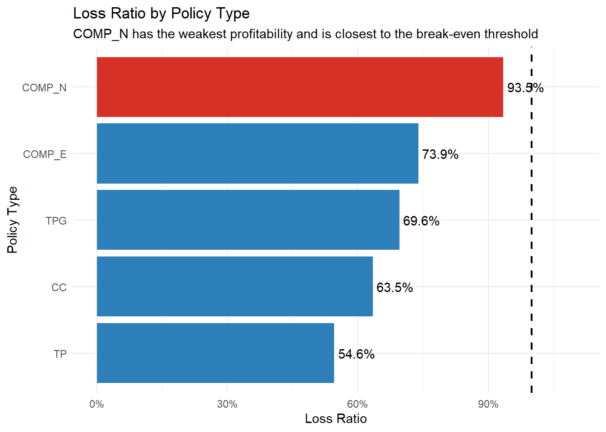
ggplot(policy_type_summary,
aes(
x = reorder(policy_type, loss_ratio),
y = loss_ratio,
fill = policy_type == "COMP_N"
)) +
geom_col() +
geom_hline(
yintercept = 1,
linetype = "dashed",
linewidth = 0.8
) +
geom_text(
aes(label = percent(loss_ratio, accuracy = 0.1)),
hjust = -0.1,
size = 3.8
) +
coord_flip() +
scale_fill_manual(
values = c("TRUE" = "#D73027", "FALSE" = "#2C7FB8"),
guide = "none"
) +
scale_y_continuous(
labels = percent,
limits = c(0, 1.1)
) +
labs(
title = "Loss Ratio by Policy Type",
subtitle = "COMP_N has the weakest profitability and is closest to the break-even threshold",
x = "Policy Type",
y = "Loss Ratio"
) +
theme_minimal()The first chart compares loss ratio across policy types. The result shows clear differences in profitability across insurance products. COMP_N has the highest loss ratio at 93.5%, followed by COMP_E at 73.9% and TPG at 69.6%. In contrast, TP has the lowest loss ratio at 54.6%, making it the most profitable policy type among the five groups.
Although all policy types remain below the 100% break-even threshold, COMP_N is much closer to this threshold than the other policy types. This means that COMP_N has a thinner underwriting margin and may be more vulnerable to future increases in claim costs. Therefore, COMP_N should be examined further to understand whether its weaker profitability is caused by claim frequency, claim severity, or insufficient premium pricing.
6.2.2 claim frequency across policy types
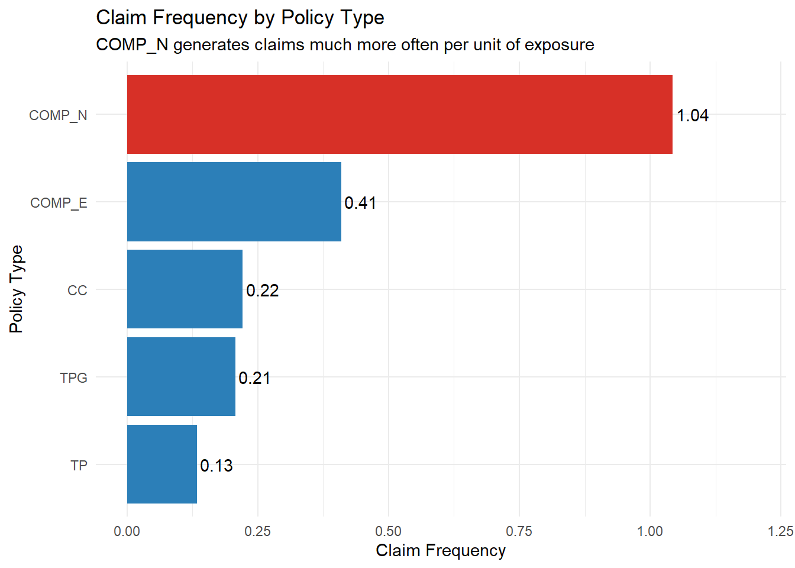
ggplot(policy_type_summary,
aes(
x = reorder(policy_type, claim_frequency),
y = claim_frequency,
fill = policy_type == "COMP_N"
)) +
geom_col() +
geom_text(
aes(label = round(claim_frequency, 2)),
hjust = -0.1,
size = 3.8
) +
coord_flip() +
scale_fill_manual(
values = c("TRUE" = "#D73027", "FALSE" = "#2C7FB8"),
guide = "none"
) +
scale_y_continuous(
limits = c(0, max(policy_type_summary$claim_frequency) * 1.15)
) +
labs(
title = "Claim Frequency by Policy Type",
subtitle = "COMP_N generates claims much more often per unit of exposure",
x = "Policy Type",
y = "Claim Frequency"
) +
theme_minimal()The second chart compares claim frequency across policy types. This helps explain whether the weaker profitability of COMP_N is mainly driven by more frequent claims. The result shows that COMP_N has a claim frequency of 1.04, which is much higher than all other policy types. COMP_E has the second highest claim frequency at 0.41, while TP has the lowest claim frequency at 0.13.
This indicates that COMP_N is a frequency-driven risk segment. In other words, COMP_N does not only have the highest loss ratio, but also generates claims much more often per unit of exposure. This helps explain why its profitability is weaker than other policy types.
Taken together, the two charts show that COMP_N is the most concerning policy type in the portfolio. It combines the highest loss ratio with the highest claim frequency, which suggests that its weak profitability is mainly driven by frequent claim occurrence. From an insurance management perspective, this segment should be prioritised for further pricing and underwriting review.
This combined analysis is more useful than examining loss ratio alone. A high loss ratio shows weaker profitability, but claim frequency helps explain the source of that weakness. For COMP_N, the main issue appears to be claim occurrence rather than only claim size. Therefore, the insurer may need to review the customer profile, vehicle characteristics, coverage design, and pricing assumptions associated with this policy type.
6.2 Policy Status and Profitability
policy_status_summary <- motor_clean %>%
group_by(policy_status) %>%
summarise(
n = n(),
premium = sum(total_premium, na.rm = TRUE),
incurred = sum(total_incurred, na.rm = TRUE),
profit = premium - incurred,
loss_ratio = incurred / premium,
.groups = "drop"
)
policy_status_summary# A tibble: 2 × 6
policy_status n premium incurred profit loss_ratio
<chr> <int> <dbl> <dbl> <dbl> <dbl>
1 A 314181 94752018. 61092259. 33659759. 0.645
2 C 38157 9627192. 12318443. -2691250. 1.28 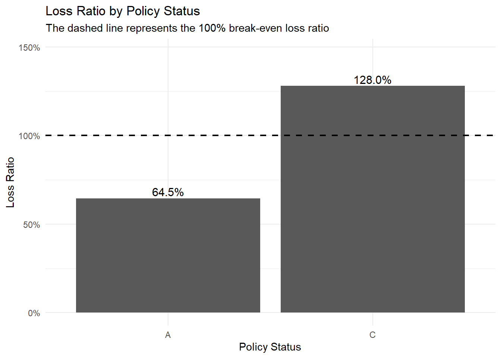
ggplot(policy_status_summary,
aes(x = policy_status, y = loss_ratio)) +
geom_col() +
geom_hline(
yintercept = 1,
linetype = "dashed",
linewidth = 0.8
) +
geom_text(
aes(label = percent(loss_ratio, accuracy = 0.1)),
vjust = -0.3,
size = 4
) +
scale_y_continuous(
labels = percent,
limits = c(0, max(policy_status_summary$loss_ratio) * 1.15)
) +
labs(
title = "Loss Ratio by Policy Status",
subtitle = "The dashed line represents the 100% break-even loss ratio",
x = "Policy Status",
y = "Loss Ratio"
) +
theme_minimal()The dashed horizontal line represents the 100% break-even loss ratio. Segments above this line are loss-making because claim costs exceed premium income.
Policy status is analysed to examine whether active and closed or cancelled policies show different profitability patterns. This is useful because policy status may reflect differences in customer behavior, policy duration, renewal decisions, or adverse claim experience.
The result shows a clear profitability difference between policy status groups. Policies with status A have a loss ratio of 64.5%, which indicates that this group remains profitable because incurred claims are lower than premium income. In contrast, policies with status C have a loss ratio of 128.0%, meaning that claim costs exceed premium income for this segment.
This is an important finding because policy status is not only an administrative variable, but also appears to be strongly associated with profitability. The result suggests that status C policies may contain worse claim experience or adverse policy behavior. From a portfolio management perspective, this segment should be prioritized for further investigation, especially to understand whether cancellation or closure is related to high claim activity.
6.3 Payment Frequency and Risk Profile
payment_summary <- motor_clean %>%
group_by(payment_frequency) %>%
summarise(
n = n(),
premium = sum(total_premium, na.rm = TRUE),
incurred = sum(total_incurred, na.rm = TRUE),
claims = sum(total_claims, na.rm = TRUE),
exposure = sum(total_exposure, na.rm = TRUE),
profit = premium - incurred,
loss_ratio = incurred / premium,
claim_frequency = claims / exposure,
claim_severity = incurred / claims,
.groups = "drop"
) %>%
arrange(desc(loss_ratio))
payment_summary# A tibble: 3 × 10
payment_frequency n premium incurred claims exposure profit loss_ratio
<chr> <int> <dbl> <dbl> <dbl> <dbl> <dbl> <dbl>
1 S 50655 15397607. 12424121. 12105 36000. 2.97e6 0.807
2 Q 15309 6676909. 5101256. 4740 10202. 1.58e6 0.764
3 A 286374 82304695. 55885324. 59697 202870. 2.64e7 0.679
# ℹ 2 more variables: claim_frequency <dbl>, claim_severity <dbl>6.3.1 loss ratio by payment frequency
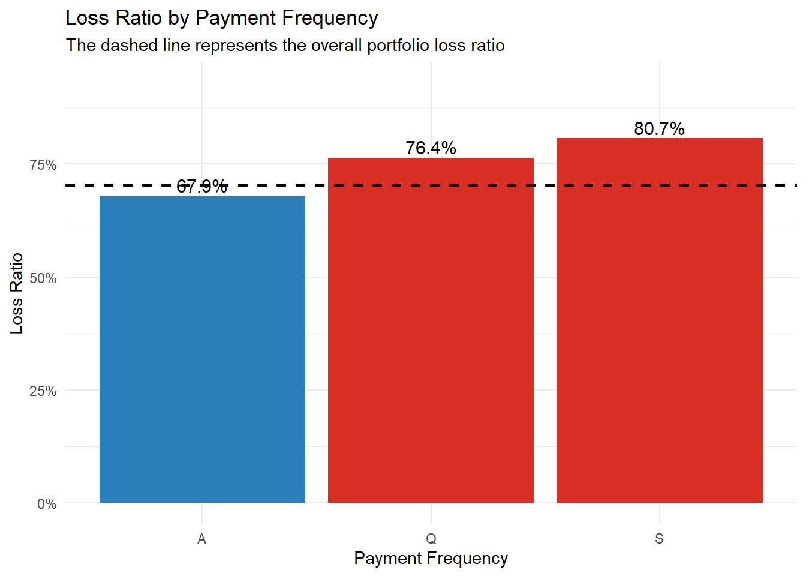
ggplot(payment_summary,
aes(x = payment_frequency, y = loss_ratio,
fill = loss_ratio > portfolio_summary$overall_loss_ratio)) +
geom_col() +
geom_hline(
yintercept = portfolio_summary$overall_loss_ratio,
linetype = "dashed",
linewidth = 0.8
) +
geom_text(
aes(label = percent(loss_ratio, accuracy = 0.1)),
vjust = -0.3,
size = 4
) +
scale_fill_manual(
values = c("TRUE" = "#D73027", "FALSE" = "#2C7FB8"),
guide = "none"
) +
scale_y_continuous(
labels = percent,
limits = c(0, max(payment_summary$loss_ratio) * 1.15)
) +
labs(
title = "Loss Ratio by Payment Frequency",
subtitle = "The dashed line represents the overall portfolio loss ratio",
x = "Payment Frequency",
y = "Loss Ratio"
) +
theme_minimal()The loss ratio by payment frequency shows that profitability differs across payment behaviour groups. Annual payment policies have the lowest loss ratio at 67.9%, while quarterly payment policies have a higher loss ratio at 76.4%. Semi-annual payment policies have the highest loss ratio at 80.7%, indicating the weakest profitability among the three groups.
This pattern suggests that payment frequency is associated with different risk profiles. Policies paid annually appear to be more profitable, while policies paid quarterly or semi-annually show weaker profitability. One possible explanation is that payment frequency may capture differences in customer characteristics, policy duration, or financial behaviour. However, this result should be interpreted as an association rather than a causal relationship.
From an insurance management perspective, payment frequency can be useful as a segmentation variable for portfolio monitoring. If non-annual payment groups consistently show higher loss ratios, the insurer may need to examine whether these customers also differ in policy type, claim frequency, exposure, or cancellation behaviour.
This finding also connects with the later risk heatmap, where payment frequency is combined with policy type to identify whether high loss ratios are concentrated in specific product-payment combinations.
6.4 Fuel Type and Claim Risk
For fuel type, the analysis compares loss ratio, claim frequency, and claim severity within the same visualisation. The pivot_longer() function is used to transform the segment-level summary table into a long format, so that the three metrics can be displayed using facet_wrap(). This design allows the comparison of profitability, claim occurrence, and average claim size side by side.
This approach is useful because a higher loss ratio can be caused by either higher claim frequency or higher claim severity. By showing all three metrics together, the chart helps identify whether fuel-type risk is frequency-driven or severity-driven.
fuel_summary <- motor_clean %>%
group_by(fuel_type) %>%
summarise(
n = n(),
premium = sum(total_premium, na.rm = TRUE),
incurred = sum(total_incurred, na.rm = TRUE),
claims = sum(total_claims, na.rm = TRUE),
exposure = sum(total_exposure, na.rm = TRUE),
profit = premium - incurred,
loss_ratio = incurred / premium,
claim_frequency = claims / exposure,
claim_severity = incurred / claims,
.groups = "drop"
)
fuel_summary# A tibble: 2 × 10
fuel_type n premium incurred claims exposure profit loss_ratio
<chr> <int> <dbl> <dbl> <dbl> <dbl> <dbl> <dbl>
1 D 226140 71557182. 52298147. 54546 159633. 19259035. 0.731
2 G 126198 32822028. 21112554. 21996 89439. 11709474. 0.643
# ℹ 2 more variables: claim_frequency <dbl>, claim_severity <dbl>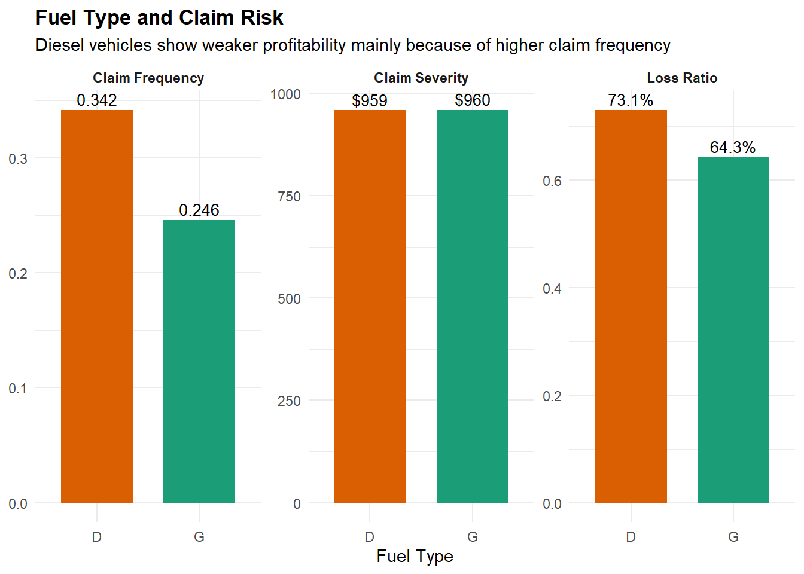
fuel_summary <- motor_clean %>%
group_by(fuel_type) %>%
summarise(
n = n(),
premium = sum(total_premium, na.rm = TRUE),
incurred = sum(total_incurred, na.rm = TRUE),
claims = sum(total_claims, na.rm = TRUE),
exposure = sum(total_exposure, na.rm = TRUE),
profit = premium - incurred,
loss_ratio = incurred / premium,
claim_frequency = claims / exposure,
claim_severity = incurred / claims,
.groups = "drop"
)
fuel_long <- fuel_summary %>%
select(fuel_type, loss_ratio, claim_frequency, claim_severity) %>%
pivot_longer(
cols = c(loss_ratio, claim_frequency, claim_severity),
names_to = "metric",
values_to = "value"
) %>%
mutate(
metric = recode(
metric,
"claim_frequency" = "Claim Frequency",
"claim_severity" = "Claim Severity",
"loss_ratio" = "Loss Ratio"
),
label = case_when(
metric == "Claim Frequency" ~ as.character(round(value, 3)),
metric == "Claim Severity" ~ dollar(value, accuracy = 1),
metric == "Loss Ratio" ~ percent(value, accuracy = 0.1)
)
)
ggplot(fuel_long, aes(x = fuel_type, y = value, fill = fuel_type)) +
geom_col(width = 0.7) +
geom_text(
aes(label = label),
vjust = -0.35,
size = 3.6
) +
facet_wrap(~ metric, scales = "free_y") +
scale_fill_manual(
values = c(
"D" = "#D95F02",
"G" = "#1B9E77"
)
) +
labs(
title = "Fuel Type and Claim Risk",
subtitle = "Diesel vehicles show weaker profitability mainly because of higher claim frequency",
x = "Fuel Type",
y = NULL
) +
theme_minimal() +
theme(
legend.position = "none",
strip.text = element_text(face = "bold"),
plot.title = element_text(face = "bold")
)The fuel type analysis compares claim frequency, claim severity, and loss ratio between diesel and gasoline vehicles. Diesel vehicles have a higher claim frequency of 0.342, compared with 0.246 for gasoline vehicles. Diesel vehicles also have a higher loss ratio of 73.1%, while gasoline vehicles have a lower loss ratio of 64.3%.
However, claim severity is almost identical between the two groups. Diesel vehicles have an average claim severity of $959, while gasoline vehicles have an average claim severity of $960. This means that diesel vehicles do not generate more expensive claims on average. Instead, they generate claims more often.
This finding suggests that the weaker profitability of diesel vehicles is mainly frequency-driven rather than severity-driven. From an underwriting perspective, this is useful because frequency-driven risk and severity-driven risk require different management responses. For diesel vehicles, the insurer may need to review vehicle usage intensity, customer driving patterns, policy type composition, or pricing adequacy, rather than focusing only on repair cost per claim.
6.5 Driver Age and Loss Ratio
driver_age_summary <- motor_clean %>%
group_by(driver_age_group) %>%
summarise(
n = n(),
premium = sum(total_premium, na.rm = TRUE),
incurred = sum(total_incurred, na.rm = TRUE),
claims = sum(total_claims, na.rm = TRUE),
exposure = sum(total_exposure, na.rm = TRUE),
profit = premium - incurred,
loss_ratio = incurred / premium,
claim_frequency = claims / exposure,
claim_severity = incurred / claims,
.groups = "drop"
)
driver_age_summary# A tibble: 6 × 10
driver_age_group n premium incurred claims exposure profit loss_ratio
<fct> <int> <dbl> <dbl> <dbl> <dbl> <dbl> <dbl>
1 18-25 1764 1015512. 638123. 560 1146. 3.77e5 0.628
2 26-35 48610 14961658. 10976512. 12380 33753. 3.99e6 0.734
3 36-45 102682 29134727. 21102352. 23031 72494. 8.03e6 0.724
4 46-55 87607 26663777. 18062129. 18758 61892. 8.60e6 0.677
5 56-65 73788 21867067. 14831588. 14909 52976. 7.04e6 0.678
6 66+ 37887 10736471. 7799998. 6904 26810. 2.94e6 0.726
# ℹ 2 more variables: claim_frequency <dbl>, claim_severity <dbl>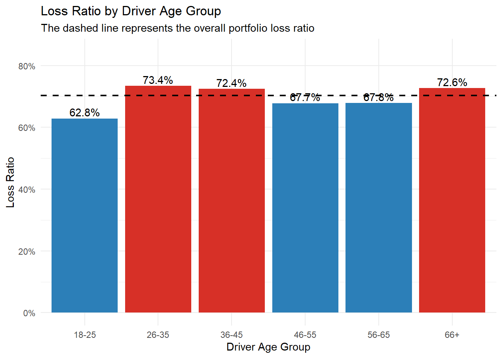
ggplot(driver_age_summary,
aes(
x = driver_age_group,
y = loss_ratio,
fill = loss_ratio > portfolio_summary$overall_loss_ratio
)) +
geom_col() +
geom_hline(
yintercept = portfolio_summary$overall_loss_ratio,
linetype = "dashed",
linewidth = 0.8
) +
geom_text(
aes(label = percent(loss_ratio, accuracy = 0.1)),
vjust = -0.3,
size = 3.8
) +
scale_fill_manual(
values = c("TRUE" = "#D73027", "FALSE" = "#2C7FB8"),
guide = "none"
) +
scale_y_continuous(
labels = percent,
limits = c(0, max(driver_age_summary$loss_ratio) * 1.15)
) +
labs(
title = "Loss Ratio by Driver Age Group",
subtitle = "The dashed line represents the overall portfolio loss ratio",
x = "Driver Age Group",
y = "Loss Ratio"
) +
theme_minimal()The loss ratio by driver age group shows that profitability differs across age segments, but the relationship is not strictly linear. The youngest group, aged 18–25, has the lowest loss ratio at 62.8%, while the 26–35 group has the highest loss ratio at 73.4%. The 36–45 and 66+ groups also show relatively high loss ratios at 72.4% and 72.6%, respectively.
This result suggests that driver age is associated with portfolio profitability, but younger drivers are not necessarily the weakest-performing group in this dataset. Instead, the highest loss ratios appear among middle-younger drivers and older drivers. This may reflect differences in vehicle usage, driving exposure, policy type composition, or customer behaviour across age groups.
From an underwriting perspective, driver age should not be interpreted in isolation. Although the 26–35 and 66+ groups show weaker profitability, further analysis would be needed to determine whether this is caused by higher claim frequency, higher claim severity, or other correlated factors such as vehicle value, policy type, or driving licence age. Therefore, driver age is useful as a segmentation variable, but it should be combined with other risk indicators for pricing and underwriting decisions.
6.6 Vehicle Age and Loss Ratio
vehicle_age_summary <- motor_clean %>%
group_by(vehicle_age_group) %>%
summarise(
n = n(),
premium = sum(total_premium, na.rm = TRUE),
incurred = sum(total_incurred, na.rm = TRUE),
claims = sum(total_claims, na.rm = TRUE),
exposure = sum(total_exposure, na.rm = TRUE),
profit = premium - incurred,
loss_ratio = incurred / premium,
claim_frequency = claims / exposure,
claim_severity = incurred / claims,
.groups = "drop"
)
vehicle_age_summary# A tibble: 5 × 10
vehicle_age_group n premium incurred claims exposure profit loss_ratio
<fct> <int> <dbl> <dbl> <dbl> <dbl> <dbl> <dbl>
1 0-5 6711 3032734. 2267816. 2074 4312. 7.65e5 0.748
2 6-10 25070 7929690. 5600949. 6161 17100. 2.33e6 0.706
3 11-20 96151 27316652. 20779045. 22360 67844. 6.54e6 0.761
4 21-30 100412 29452827. 20033514. 21672 71327. 9.42e6 0.680
5 31+ 123994 36647308. 24729377. 24275 88488. 1.19e7 0.675
# ℹ 2 more variables: claim_frequency <dbl>, claim_severity <dbl>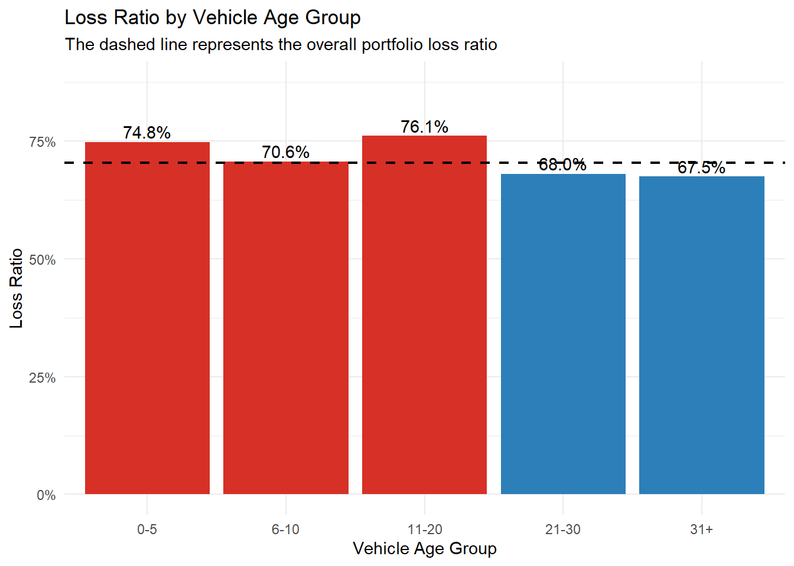
ggplot(vehicle_age_summary,
aes(
x = vehicle_age_group,
y = loss_ratio,
fill = loss_ratio > portfolio_summary$overall_loss_ratio
)) +
geom_col() +
geom_hline(
yintercept = portfolio_summary$overall_loss_ratio,
linetype = "dashed",
linewidth = 0.8
) +
geom_text(
aes(label = percent(loss_ratio, accuracy = 0.1)),
vjust = -0.3,
size = 3.8
) +
scale_fill_manual(
values = c("TRUE" = "#D73027", "FALSE" = "#2C7FB8"),
guide = "none"
) +
scale_y_continuous(
labels = percent,
limits = c(0, max(vehicle_age_summary$loss_ratio) * 1.15)
) +
labs(
title = "Loss Ratio by Vehicle Age Group",
subtitle = "The dashed line represents the overall portfolio loss ratio",
x = "Vehicle Age Group",
y = "Loss Ratio"
) +
theme_minimal()The loss ratio by vehicle age group shows that profitability differs across vehicle age segments, but the relationship is not strictly linear. Vehicles aged 11–20 years have the highest loss ratio at 76.1%, followed by newer vehicles aged 0–5 years at 74.8%. In contrast, older vehicles aged 21–30 years and 31+ years have lower loss ratios at 68.0% and 67.5%, respectively.
This result suggests that vehicle age is associated with profitability, but older vehicles are not necessarily the weakest-performing group in this portfolio. The higher loss ratio for vehicles aged 11–20 years may reflect higher claim frequency, maintenance-related risk, or different policyholder behaviour. The relatively high loss ratio for newer vehicles may be related to higher repair costs, higher vehicle values, or more expensive replacement parts.
From an underwriting perspective, vehicle age should be analysed together with claim frequency and claim severity. If newer vehicles have higher loss ratios because of higher repair costs, the risk is severity-driven. If middle-aged vehicles have higher loss ratios because they claim more often, the risk is frequency-driven. Therefore, vehicle age is useful as a segmentation variable, but further frequency-severity analysis is needed before making pricing or underwriting decisions.
Segment-Level Insights
COMP_Nis the most concerning policy type because it has both the highest loss ratio at 93.5% and the highest claim frequency at 1.04.Policy status
Cis a clear loss-making segment, with a loss ratio of 128.0%. This means claim costs exceed premium income for this group.Non-annual payment groups show weaker profitability. Annual payment policies have the lowest loss ratio at 67.9%, while quarterly and semi-annual payment policies have higher loss ratios of 76.4% and 80.7%.
Diesel vehicles have weaker profitability mainly because of higher claim frequency. Claim severity is almost identical between diesel and gasoline vehicles, suggesting that fuel-type risk is frequency-driven rather than severity-driven.
Driver age and vehicle age show non-linear profitability patterns. Therefore, they should be interpreted together with other risk indicators rather than in isolation.
7. Advanced Visual Analytics
This section extends the analysis beyond one-variable bar charts by using advanced visual analytics techniques. The purpose is to identify high-risk segment combinations and to provide a more interactive view of portfolio performance.
A heatmap is used to combine policy type and payment frequency in one visualisation. This helps identify whether high loss ratios are concentrated in specific product-payment combinations. A quadrant chart is then used to compare claim frequency and loss ratio at the same time, with bubble size representing premium volume. Finally, an interactive plotly chart is created to allow users to inspect detailed segment-level information through tooltips.
7.1 Risk Heatmap by Policy Type and Payment Frequency
The risk heatmap is created by grouping the data by policy type and payment frequency. The geom_tile() function is used to display each segment as a cell, while fill colour represents the segment-level loss ratio. The geom_text() function is used to place the loss ratio value inside each cell.
This visual design is useful because it allows two categorical variables to be examined simultaneously. It can reveal high-risk combinations that may be hidden when policy type and payment frequency are analysed separately.
risk_heatmap <- motor_clean %>%
group_by(policy_type, payment_frequency) %>%
summarise(
n = n(),
premium = sum(total_premium, na.rm = TRUE),
incurred = sum(total_incurred, na.rm = TRUE),
claims = sum(total_claims, na.rm = TRUE),
exposure = sum(total_exposure, na.rm = TRUE),
loss_ratio = incurred / premium,
claim_frequency = claims / exposure,
.groups = "drop"
)
risk_heatmap# A tibble: 15 × 9
policy_type payment_frequency n premium incurred claims exposure
<chr> <chr> <int> <dbl> <dbl> <dbl> <dbl>
1 CC A 164703 38211302. 22375541. 23723 116286.
2 CC Q 8428 3259610. 2606788. 2133 5497.
3 CC S 31186 8244239. 6563400. 5944 22227.
4 COMP_E A 75353 28897211. 21404901. 21470 53730.
5 COMP_E Q 3894 1988305. 1416589. 1462 2772.
6 COMP_E S 11073 4450025. 3307138. 3450 7915.
7 COMP_N A 13367 8536719. 7901252. 10469 10212.
8 COMP_N Q 813 574516. 446706. 699 617.
9 COMP_N S 1832 1101681. 1198474. 1581 1392.
10 TP A 4727 778953. 477224. 396 3135.
11 TP Q 170 65048. 10326. 17 106.
12 TP S 804 165416. 63573. 90 527.
13 TPG A 28224 5880510. 3726406. 3639 19506.
14 TPG Q 2004 789430. 620848. 429 1210.
15 TPG S 5760 1436246. 1291536. 1040 3940.
# ℹ 2 more variables: loss_ratio <dbl>, claim_frequency <dbl>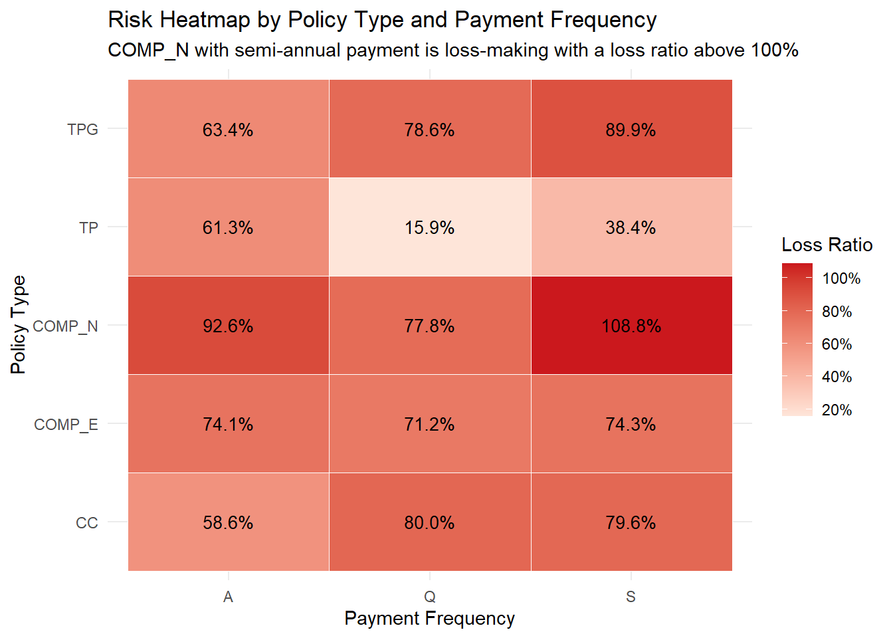
risk_heatmap <- risk_heatmap %>%
mutate(
risk_label = if_else(loss_ratio > 1, "Loss-making", "Profitable")
)
ggplot(risk_heatmap,
aes(x = payment_frequency, y = policy_type, fill = loss_ratio)) +
geom_tile(color = "white") +
geom_text(
aes(label = percent(loss_ratio, accuracy = 0.1)),
size = 3.5
) +
scale_fill_gradient(
low = "#FEE5D9",
high = "#CB181D",
labels = percent,
name = "Loss Ratio"
) +
labs(
title = "Risk Heatmap by Policy Type and Payment Frequency",
subtitle = "COMP_N with semi-annual payment is loss-making with a loss ratio above 100%",
x = "Payment Frequency",
y = "Policy Type"
) +
theme_minimal()The risk heatmap provides a segment-level view of profitability by combining policy type and payment frequency. Compared with separate bar charts, this heatmap is more informative because it shows whether high loss ratios are concentrated in specific product-payment combinations.
The most important finding is that the COMP_N and semi-annual payment segment has the highest loss ratio at 108.8%. Since this value is above the 100% break-even threshold, this segment is loss-making: claim costs exceed premium income. This is a stronger warning signal than the overall COMP_N loss ratio because it shows that the profitability problem is especially concentrated in the semi-annual payment subgroup.
The heatmap also shows that TPG with semi-annual payment has a relatively high loss ratio of 89.9%, while CC policies with quarterly and semi-annual payments have loss ratios close to 80%. These results suggest that payment frequency may interact with policy type. In other words, the risk associated with payment frequency is not the same for every policy type.
From an insurance management perspective, this heatmap helps prioritise underwriting and pricing review. Instead of treating all COMP_N policies as equally risky, the insurer can focus first on the COMP_N and semi-annual payment segment. This demonstrates the value of visual analytics: it helps identify more specific high-risk combinations that may be hidden in one-variable summaries.
Overall, the heatmap reveals that profitability problems are not evenly distributed across the portfolio. The highest-risk segment is not simply COMP_N as a whole, but specifically COMP_N policies with semi-annual payment frequency.
Key Risk Segment
The heatmap identifies
COMP_N + Sas the highest-risk segment.COMP_N + Shas a loss ratio of 108.8%, which is above the 100% break-even threshold.This means that claim costs exceed premium income for this specific product-payment combination.
The result shows that the profitability problem is not only
COMP_Nas a broad policy type, but more specificallyCOMP_Nwith semi-annual payment frequency.
7.3 Interactive Segment-Level Visualisation
The interactive visualisation is created using ggplotly() from the plotly package. The original ggplot object is converted into an interactive chart, allowing users to hover over each point and inspect detailed information such as loss ratio, claim frequency, claim severity, premium income, and profit.
This is useful for exploratory visual analytics because insurance portfolio review often requires comparing multiple performance indicators at the same time. The interactive chart allows users to move from a broad visual pattern to detailed segment-level information.
interactive_policy_plot <- ggplot(
policy_type_summary,
aes(
x = claim_frequency,
y = loss_ratio,
size = premium,
text = paste(
"Policy Type:", policy_type,
"<br>Loss Ratio:", percent(loss_ratio, accuracy = 0.1),
"<br>Claim Frequency:", round(claim_frequency, 3),
"<br>Claim Severity:", dollar(claim_severity),
"<br>Premium:", dollar(premium),
"<br>Profit:", dollar(profit)
)
)
) +
geom_point(
alpha = 0.75,
color = "#2C7FB8"
) +
geom_text(
aes(label = policy_type),
vjust = -1,
size = 3.5,
show.legend = FALSE
) +
geom_hline(
yintercept = portfolio_summary$overall_loss_ratio,
linetype = "dashed",
linewidth = 0.7
) +
geom_vline(
xintercept = portfolio_summary$overall_claim_frequency,
linetype = "dashed",
linewidth = 0.7
) +
scale_y_continuous(
labels = percent,
limits = c(0.50, 1.00)
) +
scale_x_continuous(
limits = c(0, max(policy_type_summary$claim_frequency) * 1.15)
) +
scale_size_continuous(labels = dollar) +
labs(
title = "Interactive Segment Analysis by Policy Type",
subtitle = "Hover over each point to inspect loss ratio, claim frequency, severity, premium, and profit",
x = "Claim Frequency",
y = "Loss Ratio",
size = "Premium"
) +
theme_minimal()
ggplotly(interactive_policy_plot, tooltip = "text")The interactive segment-level visualisation extends the premium adequacy quadrant by allowing users to inspect each policy type directly. Each point represents one policy type. The x-axis shows claim frequency, the y-axis shows loss ratio, and the bubble size represents premium volume. When the user hovers over a point, the tooltip displays additional information, including loss ratio, claim frequency, claim severity, premium income, and profit.
This interactive design is useful because insurance portfolio review often requires comparing multiple indicators at the same time. A static chart can show the overall pattern, but an interactive chart allows decision-makers to examine the details of each segment more efficiently. For example, COMP_E has a loss ratio of 73.9%, claim frequency of 0.41, claim severity of about $990, premium income of about $35.3 million, and profit of about $9.2 million. This helps show that although COMP_E has weaker-than-average profitability, it still contributes positive underwriting profit.
From a visual analytics perspective, the interactive chart supports deeper exploration beyond dashboard reporting. It allows the analyst to move from a broad pattern to specific segment details. This is especially useful for identifying policy types that combine high premium volume, high claim frequency, and weak profitability. These segments should be prioritised for pricing review, underwriting refinement, or further claim driver investigation.
Overall, the interactive chart confirms that COMP_N is the most concerning policy type because it is located in the high-frequency and high-loss-ratio area. It also shows that some policy types with weaker profitability still generate positive profit because of their premium volume. Therefore, interactive visual analytics helps balance risk, profitability, and business scale in portfolio review.
Advanced Visual Analytics Insights
The risk heatmap reveals that profitability problems are concentrated in specific product-payment combinations.
The premium adequacy quadrant confirms that
COMP_Nis located in the high-frequency and high-loss-ratio area.The interactive visualisation allows users to inspect loss ratio, claim frequency, claim severity, premium volume, and profit at the same time.
Together, these advanced visualisations move the analysis beyond simple dashboard reporting and provide more actionable support for pricing and underwriting review.
8. Statistical Validation
8.1 Introduction to Statistical Validation
The previous sections used visual analytics to identify important patterns in the insurance portfolio. However, visual patterns alone may be influenced by skewed distributions, uneven sample sizes, or random variation. Therefore, statistical validation is used to support the main visual findings.
The purpose of these tests is not to replace the visual analysis, but to check whether the observed relationships are statistically meaningful. Since insurance variables such as loss ratio and claim cost are highly skewed, non-parametric and categorical tests are used where appropriate.
8.2 Kruskal-Wallis Test: Policy Type and Loss Ratio
kruskal_policy <- kruskal.test(loss_ratio ~ policy_type, data = motor_clean)
kruskal_policy
Kruskal-Wallis rank sum test
data: loss_ratio by policy_type
Kruskal-Wallis chi-squared = 7201.8, df = 4, p-value < 2.2e-16kruskal_policy_result <- tibble(
test = "Kruskal-Wallis test",
variable = "Policy Type",
statistic = kruskal_policy$statistic,
p_value = kruskal_policy$p.value
)
kruskal_policy_result# A tibble: 1 × 4
test variable statistic p_value
<chr> <chr> <dbl> <dbl>
1 Kruskal-Wallis test Policy Type 7202. 0A Kruskal-Wallis test is used to examine whether the distribution of loss ratio differs across policy types. This test is selected because loss ratio is highly skewed and does not necessarily satisfy the normality assumption required by a standard ANOVA.
The visual analysis showed that COMP_N has the highest loss ratio among all policy types, while TP has the lowest. The Kruskal-Wallis test provides statistical support for this pattern. If the p-value is statistically significant, it suggests that profitability differs across policy types and that the differences shown in the visualisation are unlikely to be due only to random variation.
This result supports the earlier finding that policy type is an important driver of portfolio profitability. In particular, COMP_N should be treated as a priority segment because it combines the highest loss ratio with the highest claim frequency.
8.3 Chi-square Test: Fuel Type and Claim Occurrence
fuel_claim_table <- table(motor_clean$fuel_type, motor_clean$claim_indicator)
fuel_claim_table
0 1
D 190897 35243
G 110965 15233chisq_fuel <- chisq.test(fuel_claim_table)
chisq_fuel
Pearson's Chi-squared test with Yates' continuity correction
data: fuel_claim_table
X-squared = 814.55, df = 1, p-value < 2.2e-16chisq_fuel_result <- tibble(
test = "Chi-square test",
variable = "Fuel Type",
statistic = chisq_fuel$statistic,
p_value = chisq_fuel$p.value
)
chisq_fuel_result# A tibble: 1 × 4
test variable statistic p_value
<chr> <chr> <dbl> <dbl>
1 Chi-square test Fuel Type 815. 3.71e-179A chi-square test is used to examine whether claim occurrence is independent of fuel type. This test is appropriate because both fuel type and claim occurrence are categorical variables.
The visual analysis showed that diesel vehicles have higher claim frequency and higher loss ratio than gasoline vehicles, while claim severity is similar between the two groups. If the chi-square test is statistically significant, it supports the finding that claim occurrence differs by fuel type.
This result strengthens the interpretation that diesel vehicles are mainly a frequency-driven risk segment. Their weaker profitability appears to be caused more by frequent claim occurrence than by larger individual claim costs.
8.4 Spearman Correlation: Driver Age and Loss Ratio
spearman_driver_age <- cor.test(
motor_clean$driver_age,
motor_clean$loss_ratio,
method = "spearman"
)
spearman_driver_age
Spearman's rank correlation rho
data: motor_clean$driver_age and motor_clean$loss_ratio
S = 7.4737e+15, p-value < 2.2e-16
alternative hypothesis: true rho is not equal to 0
sample estimates:
rho
-0.02562975 spearman_driver_age_result <- tibble(
test = "Spearman correlation",
variable = "Driver Age",
estimate = spearman_driver_age$estimate,
p_value = spearman_driver_age$p.value
)
spearman_driver_age_result# A tibble: 1 × 4
test variable estimate p_value
<chr> <chr> <dbl> <dbl>
1 Spearman correlation Driver Age -0.0256 2.82e-52Spearman correlation is used to examine the relationship between driver age and loss ratio. This method is more appropriate than Pearson correlation because the relationship may not be linear and loss ratio is highly skewed.
The visual analysis showed that the relationship between driver age and profitability is not strictly linear. The 26–35, 36–45, and 66+ age groups have relatively higher loss ratios, while the 18–25 group has the lowest loss ratio. Therefore, the correlation result should be interpreted carefully.
If the test is statistically significant, it suggests that driver age is associated with loss ratio. However, correlation does not imply causation. Driver age may also be related to other factors such as vehicle value, policy type, driving licence age, or vehicle usage patterns.
8.5 Logistic Regression for Claim Occurrence
set.seed(123)
motor_model_sample <- motor_clean %>%
sample_n(50000)
claim_model <- glm(
claim_indicator ~ driver_age + vehicle_age + vehicle_value +
policy_type + fuel_type + payment_frequency + circulation_area +
municipality_type + business_type,
data = motor_model_sample,
family = binomial
)
summary(claim_model)
Call:
glm(formula = claim_indicator ~ driver_age + vehicle_age + vehicle_value +
policy_type + fuel_type + payment_frequency + circulation_area +
municipality_type + business_type, family = binomial, data = motor_model_sample)
Coefficients:
Estimate Std. Error z value Pr(>|z|)
(Intercept) -2.253e+00 7.707e-02 -29.240 < 2e-16 ***
driver_age 1.883e-03 2.082e-03 0.905 0.365563
vehicle_age -1.135e-02 2.171e-03 -5.228 1.72e-07 ***
vehicle_value 7.354e-06 1.075e-06 6.838 8.02e-12 ***
policy_typeCOMP_E 4.635e-01 3.046e-02 15.216 < 2e-16 ***
policy_typeCOMP_N 1.153e+00 4.996e-02 23.072 < 2e-16 ***
policy_typeTP -4.155e-01 1.329e-01 -3.126 0.001771 **
policy_typeTPG -3.957e-02 4.761e-02 -0.831 0.405924
fuel_typeG -1.672e-01 2.966e-02 -5.638 1.72e-08 ***
payment_frequencyQ 4.176e-01 5.640e-02 7.405 1.32e-13 ***
payment_frequencyS 1.886e-01 3.608e-02 5.226 1.74e-07 ***
circulation_areaU 1.189e-01 2.658e-02 4.472 7.74e-06 ***
municipality_typeI 1.041e-01 2.990e-02 3.483 0.000495 ***
municipality_typeIS 1.636e-01 5.686e-02 2.877 0.004009 **
business_typeP 4.011e-01 2.674e-02 15.001 < 2e-16 ***
---
Signif. codes: 0 '***' 0.001 '**' 0.01 '*' 0.05 '.' 0.1 ' ' 1
(Dispersion parameter for binomial family taken to be 1)
Null deviance: 41340 on 49999 degrees of freedom
Residual deviance: 39964 on 49985 degrees of freedom
AIC: 39994
Number of Fisher Scoring iterations: 4logit_result <- tidy(claim_model) %>%
mutate(
odds_ratio = exp(estimate),
conf_low = exp(estimate - 1.96 * std.error),
conf_high = exp(estimate + 1.96 * std.error)
) %>%
select(
term,
odds_ratio,
conf_low,
conf_high,
p.value
) %>%
arrange(p.value)
logit_result# A tibble: 15 × 5
term odds_ratio conf_low conf_high p.value
<chr> <dbl> <dbl> <dbl> <dbl>
1 (Intercept) 0.105 0.0903 0.122 6.08e-188
2 policy_typeCOMP_N 3.17 2.87 3.49 8.92e-118
3 policy_typeCOMP_E 1.59 1.50 1.69 2.79e- 52
4 business_typeP 1.49 1.42 1.57 7.24e- 51
5 payment_frequencyQ 1.52 1.36 1.70 1.32e- 13
6 vehicle_value 1.00 1.00 1.00 8.02e- 12
7 fuel_typeG 0.846 0.798 0.897 1.72e- 8
8 vehicle_age 0.989 0.985 0.993 1.72e- 7
9 payment_frequencyS 1.21 1.13 1.30 1.74e- 7
10 circulation_areaU 1.13 1.07 1.19 7.74e- 6
11 municipality_typeI 1.11 1.05 1.18 4.95e- 4
12 policy_typeTP 0.660 0.509 0.856 1.77e- 3
13 municipality_typeIS 1.18 1.05 1.32 4.01e- 3
14 driver_age 1.00 0.998 1.01 3.66e- 1
15 policy_typeTPG 0.961 0.876 1.06 4.06e- 1A logistic regression model is used as a supporting validation method for claim occurrence. The model estimates whether selected driver, vehicle, and policy characteristics are associated with the probability of having at least one claim after controlling for other variables.
Because the full dataset is large, a random sample of 50,000 observations is used for this validation model. The purpose of the model is not to build a full predictive model, but to support the visual analytics findings. The output is reported using odds ratios. An odds ratio above 1 indicates higher odds of having a claim, while an odds ratio below 1 indicates lower odds of having a claim.
This model helps check whether the visual findings remain meaningful when several variables are analysed together. For example, if policy type, fuel type, or payment frequency remains statistically significant, it supports the earlier segment-level findings that these variables are associated with claim risk.
9. Key Findings
The visual analytics reveal several important findings about the motor insurance portfolio.
First, the portfolio is profitable overall, but profitability deteriorates over time. The yearly loss ratio increased from 65.7% in 2022 to 66.5% in 2023 and then to 74.7% in 2024. Although the loss ratio remains below the 100% break-even threshold, the upward trend indicates that the underwriting margin became thinner in 2024.
Second, both premium income and incurred claims increased from 2022 to 2024. However, incurred claims grew faster relative to premium income, especially in 2024. This explains why the portfolio loss ratio increased. Business growth alone does not guarantee stronger profitability if claim costs grow faster than premium income.
Third, claim costs are highly concentrated. The claim concentration curve shows that a small share of high-loss policies contributes a large share of total incurred claims. This means that portfolio volatility is strongly influenced by tail-risk observations rather than only by average claim behaviour.
Fourth, the frequency-severity decomposition shows that claim frequency increased steadily from 2022 to 2024, while claim severity decreased in 2023 but rebounded in 2024. Therefore, the deterioration in 2024 profitability appears to be driven by both higher claim frequency and a rebound in average claim size.
Fifth, policy type is a major driver of profitability. COMP_N has the highest loss ratio at 93.5% and the highest claim frequency at 1.04. This makes COMP_N the most concerning policy type because it combines weak profitability with frequent claim occurrence.
Sixth, policy status is strongly associated with profitability. Policy status C has a loss ratio of 128.0%, which is above the 100% break-even threshold. This means that claim costs exceed premium income for this segment. In contrast, policy status A has a much lower loss ratio of 64.5%.
Seventh, payment frequency is associated with different profitability patterns. Annual payment policies have the lowest loss ratio at 67.9%, while quarterly and semi-annual payment policies have higher loss ratios of 76.4% and 80.7%, respectively. This suggests that non-annual payment groups may have weaker profitability.
Eighth, diesel vehicles show weaker profitability than gasoline vehicles, but the difference is mainly frequency-driven. Diesel vehicles have a higher claim frequency of 0.342 compared with 0.246 for gasoline vehicles. However, claim severity is almost identical between the two groups, at approximately $959 for diesel vehicles and $960 for gasoline vehicles. This suggests that diesel vehicles do not generate more expensive claims on average; instead, they generate claims more often.
Ninth, driver age and vehicle age show non-linear profitability patterns. For driver age, the 26–35, 36–45, and 66+ groups have relatively higher loss ratios, while the 18–25 group has the lowest loss ratio. For vehicle age, the 0–5 and 11–20 groups show weaker profitability than older vehicle groups.
Finally, the advanced visual analytics reveal more specific high-risk combinations. The risk heatmap shows that COMP_N policies with semi-annual payment have a loss ratio of 108.8%, making this segment loss-making. The premium adequacy quadrant also confirms that COMP_N is located in the high-frequency and high-loss-ratio area.
10. Business Implications
The findings provide several practical implications for insurance portfolio management.
First, COMP_N should be prioritised for pricing and underwriting review. It has the highest loss ratio and the highest claim frequency among all policy types. This suggests that the premium charged for COMP_N may not fully reflect its claim occurrence risk. The insurer should further examine the customer profile, vehicle characteristics, coverage design, and underwriting rules associated with this policy type.
Second, the insurer should pay particular attention to COMP_N policies with semi-annual payment frequency. The risk heatmap shows that this specific segment has a loss ratio of 108.8%, which means it is loss-making. This finding shows the value of segment-level visual analytics. The problem is not only COMP_N as a broad policy type, but more specifically COMP_N combined with semi-annual payment.
Third, policy status C requires further investigation. Its loss ratio is 128.0%, which means claim costs exceed premium income. The insurer should examine whether policy closure or cancellation is related to adverse claim experience. If customers with poor claim experience are more likely to enter status C, this may indicate retention risk or adverse selection.
Fourth, the rising yearly loss ratio suggests that the insurer should monitor pricing adequacy over time. The portfolio remains profitable, but the margin of profitability became smaller in 2024. If claim frequency or claim severity continues to increase, premium adjustments or underwriting refinements may be necessary.
Fifth, the claim concentration result suggests that tail-risk monitoring should be included in regular portfolio review. A small number of large-loss policies can have a significant effect on total incurred claims. Therefore, large-loss policies should be analysed separately to identify whether they are concentrated in specific policy types, vehicle age groups, fuel types, or payment frequency groups.
Sixth, diesel vehicles should be monitored as a frequency-driven risk segment. The analysis shows that diesel vehicles have higher claim frequency and higher loss ratio than gasoline vehicles, while claim severity is almost the same. This means the insurer should investigate vehicle usage intensity, customer driving patterns, exposure characteristics, or policy type composition for diesel vehicles, rather than focusing only on repair cost per claim.
Finally, non-annual payment groups should also be monitored as potential risk indicators. Quarterly and semi-annual payment groups have higher loss ratios than annual payment policies. This result should not be interpreted as causal evidence, but it provides a useful segmentation signal for further underwriting and pricing investigation.
11. Limitations
This study has several limitations.
First, the analysis is exploratory and focuses on associations rather than causal effects. For example, the finding that COMP_N has a higher loss ratio does not prove that the policy type itself causes higher claims. The result may also reflect differences in customer profiles, vehicle characteristics, coverage design, or exposure patterns.
Second, some variables are coded categories and require deeper business interpretation. Without full internal documentation from the insurer, the exact business meaning of some categories may not be fully clear.
Third, the dataset does not include external factors such as repair cost inflation, regional traffic density, weather conditions, fraud risk, or macroeconomic conditions. These external factors may also affect claim frequency and claim severity.
Fourth, the logistic regression model is used only as a supporting validation method. It is not intended to be a full predictive model. A more advanced predictive modelling framework could be developed in future work to estimate claim probability, claim severity, or expected loss more accurately.
Finally, some charts aggregate policies into broad groups, such as driver age groups and vehicle age groups. While grouping improves readability, it may hide variation within each group.
12. Conclusion
In conclusion, this take-home exercise demonstrates how visual analytics can be used to investigate profitability, claim volatility, and high-risk segments in a motor insurance portfolio.
The analysis shows that the portfolio is profitable overall, but profitability deteriorated from 2022 to 2024. The loss ratio increased to 74.7% in 2024, indicating that claim costs became heavier relative to premium income. Frequency-severity decomposition further shows that this deterioration is related to both higher claim frequency and a rebound in claim severity.
The segment-level analysis reveals that profitability problems are not evenly distributed across the portfolio. COMP_N is the most concerning policy type because it has both the highest loss ratio and the highest claim frequency. Policy status C is also a clear loss-making segment, with a loss ratio of 128.0%. Payment frequency, driver age, vehicle age, and fuel type also provide useful segmentation signals.
The fuel type analysis shows the value of separating claim frequency from claim severity. Diesel vehicles have weaker profitability than gasoline vehicles, but their claim severity is almost identical. Their weaker performance is mainly driven by more frequent claim occurrence rather than larger individual claim costs. This demonstrates why frequency-severity decomposition is important for insurance portfolio analysis.
The advanced visual analytics provide more detailed insights. The risk heatmap identifies COMP_N with semi-annual payment as a specific loss-making segment, while the premium adequacy quadrant confirms that COMP_N is located in the high-frequency and high-loss-ratio area. The interactive chart further supports exploratory investigation by allowing users to inspect loss ratio, claim frequency, claim severity, premium volume, and profit at the segment level.
Overall, this report shows that visual analytics can move insurance analysis beyond simple dashboard reporting. It helps identify where profitability problems are concentrated, explains whether weak performance is frequency-driven or severity-driven, and supports more targeted underwriting, pricing, and portfolio management decisions.
Overall, this report shows that visual analytics can move insurance analysis beyond simple dashboard reporting. It helps identify where profitability problems are concentrated, explains whether weak performance is frequency-driven or severity-driven, and supports more targeted underwriting, pricing, and portfolio management decisions.